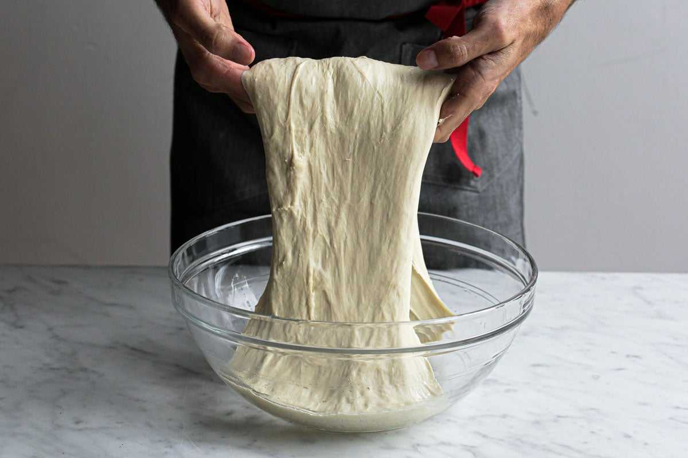
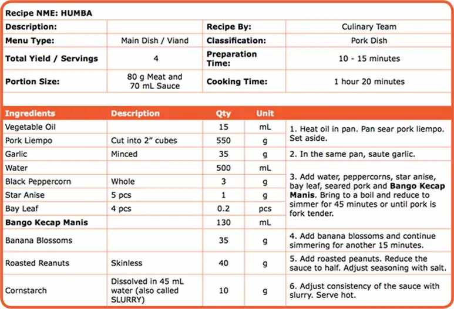
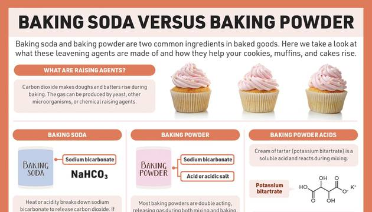

The Scaling Library
Stories from a too-small kitchen, tutorials from a math classroom, and the science behind every collapsed cake.

Cooking For One Portion Loneliness 2026
I cook for one. Have for three years. And my fridge is a graveyard of good intentions. Half an onion. A third of a bell pepper. Two servings of soup t...

The Dinner Party Where I Served 12 People And Ran Out Of Food
The Dinner Party Where I Served 12 People and Ran Out of Food I was standing in my kitchen in Charleston at 8:45 PM, holding an empty serving dish, an...

Charleston Heat Recipe Portions Collapse
Why My Recipe Portions Collapsed During Charleston's Heat Dome—And My Family Revolted Emily Clarke I was standing in my kitchen at 6 PM on a Tuesday, ...

Doubled Recipe Fed 20 Not 8
I was making lasagna for a dinner party. Sixteen people. The recipe said "serves 8." Simple math: double the recipe, feed 16. I bought double the ingr...

How to Scale International Recipes: Metric to Imperial
UK tablespoons, Australian cups, French flour types, and fresh yeast. The conversion cheat sheet.

12 Holiday Recipes Scaled for Crowds
Thanksgiving, Christmas, and party math. From turkey gravy to 100 cookies.

The Complete Pan Size Substitution Guide
Every common pan, its volume, its area, and what you can swap it for without overflow.

8 Dietary Restriction Scaling Rules for Beginners
The 8 rules that keep gluten-free, vegan, low-sodium, and sugar-free scaling from becoming a disaster.

10 Signs Your Scaled Recipe Is About to Fail
Overflowing batter, fast-rising dough, doming cakes. Spot the warning signs before the oven timer.

15 Tools Every Recipe Scaler Needs in 2026
From a $22 scale to a probe thermometer. The toolkit that makes scaling possible.

The Ultimate Ingredient Density Chart: 150+ Foods
The complete reference for flour, sugar, fat, liquid, leavener, and salt densities.

20 Common Scaling Mistakes and How to Avoid Them
From leavening to oven capacity to forgetting to label your bowls. The complete checklist.

The Night I Cooked For 12 And Fed 4 A Recipe Scaling
The Night I Cooked for 12 and Fed 4: A Recipe Scaling Disaster in Charleston It was my sister's birthday. She was turning 34. I offered to cook dinner...

Pan Volume Math: Why Area Matters More Than You Think
A 9-inch round and an 8-inch square have the same area. A 9x13 has double. Here's the math.

What Is Mise en Place and How It Saves Scaling Mistakes
Measure everything first. Mix second. The habit that prevents $30 ingredient disasters.

The Chemistry of Salt in Baking: Why Linear Scaling Fails
Salt controls yeast, strengthens gluten, and enhances flavor. But it doesn't scale 1:1.

Understanding Hydration Ratio in Bread Dough
50% to 85% hydration. What each level feels like, bakes like, and tastes like.

What Is Recipe Yield and Why 'Servings' Is Imprecise
Stop trusting 'serves 4.' Start weighing your finished dish. Yield is the only honest number.

The Science of Leavening: How Baking Powder and Yeast Scale Differently
Baking soda, baking powder, yeast. Three different chemistries, three different scaling rules.

Understanding Ingredient Density: Why 1 Cup of Flour Isn't Always 120g
Sifted, spooned, dipped, packed. The same cup can vary by 80%. Here's the fix.

What Is Baker's Percentage and Why Every Cook Should Know It
The math that turns recipes into relationships. Once you see it, you can't unsee it.

How to Reduce Salt by 25% Without Losing Flavor
The slow reduction method that retrains your palate. Plus acid, umami, and herb cheats.

Scaling for Catering: 1.5x Buffet vs 0.8x Plated
Why buffets need 1.5x home portions and plated dinners only need 0.8x. Real event math.

How to Calculate Vegan Egg Replacer Quantities
Flax, chia, applesauce, aquafaba, silken tofu, and commercial powders. Which to use and when.

The Complete Guide to Gluten-Free Flour Blend Ratios
The 40/30/30 blend that works for 90% of gluten-free baking, plus scaling rules for xanthan gum.

How to Scale Recipes for Dietary Restrictions
Gluten-free, vegan, low-sodium, sugar-free. The substitutions that change the math.

Building Your First Ingredient Density Reference Chart
Stop guessing how much a cup of flour weighs. Build a laminated chart in one afternoon.

How to Substitute Pan Sizes Without Disaster
Volume, area, depth, and baking time. The math behind swapping pans without overflow.

A Step-by-Step Guide to Baker's Percentage Conversion
Flour is 100%. Everything else is a percentage. Here's how to convert any recipe.

How to Scale Any Recipe by Servings: The Complete Method
The 7-step method I teach on day one. From yield calculation to equipment checks.

The Student Who Scaled a Soufflé for 50 and Lived to Tell
Jasmine failed algebra twice. Then she scaled a chocolate soufflé to 50 servings.

Why My Kitchen Is Too Small for My Ambitions (But Perfect for Testing)
An 8x10 foot kitchen forces me to test small and scale on paper. Here's why that's a gift.

From Pastry Chef to Math Teacher: My Flour-Dusted Journey
How I left the hotel kitchen, got a math degree, and started teaching culinary math.

The Day I Forgot to Adjust Baking Soda and Ruined a Batch
I made chocolate chip cookies that tasted like soap. Here's why, and the formula that prevents it.

How I Scaled a 12-Serving Recipe to Feed 200 Without Math Panic
A community college event with 200 students, a $200 budget, and one mac and cheese recipe.

The Wedding Cake That Collapsed at 2 a.m.: My Scaling Nightmare
The story of a wedding cake disaster that taught me leavening doesn't scale linearly.